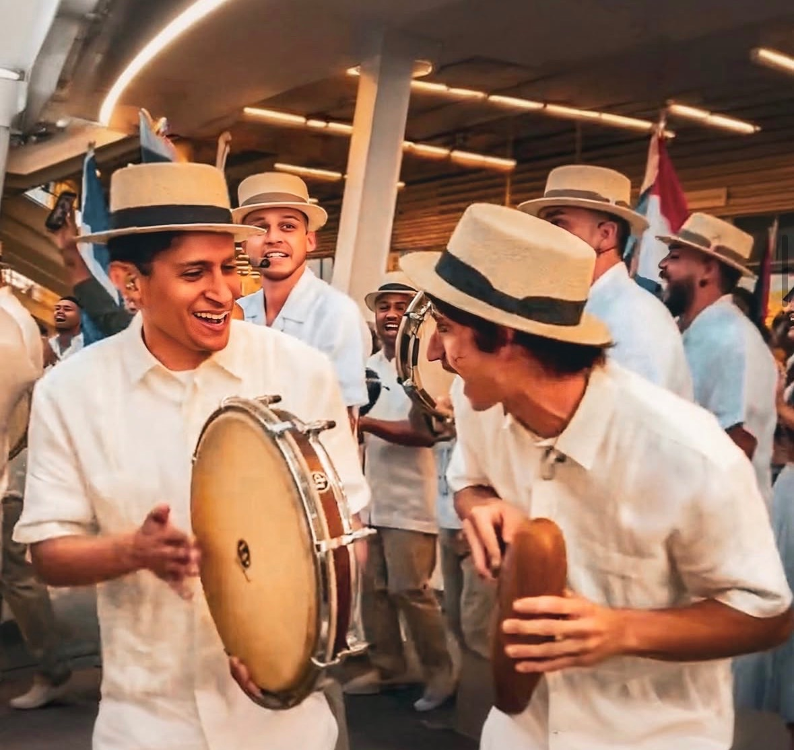
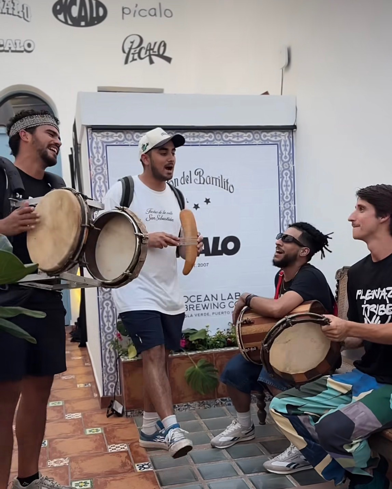
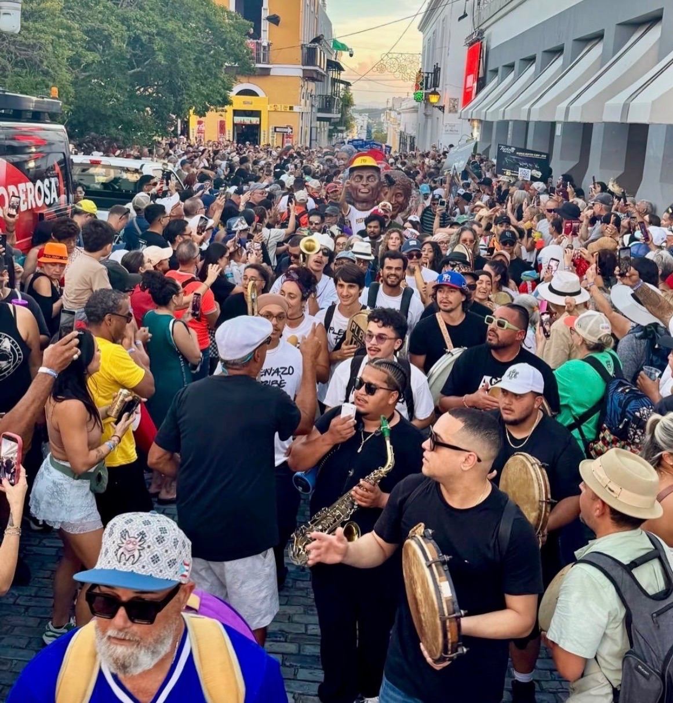
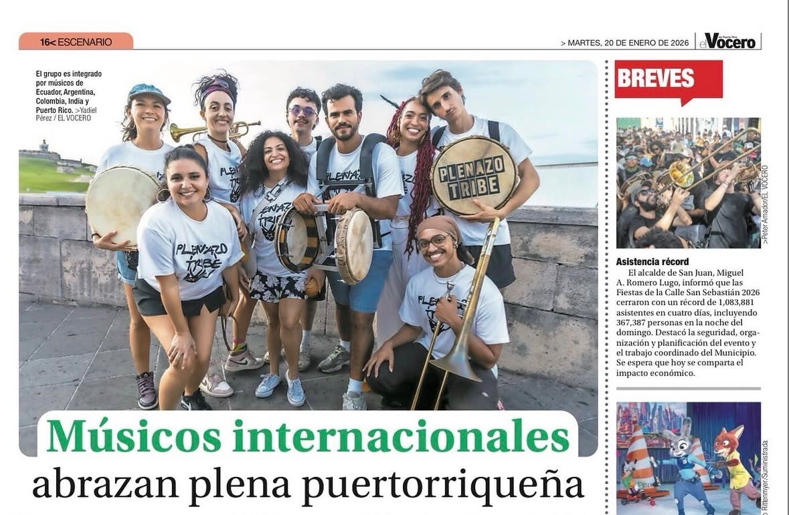
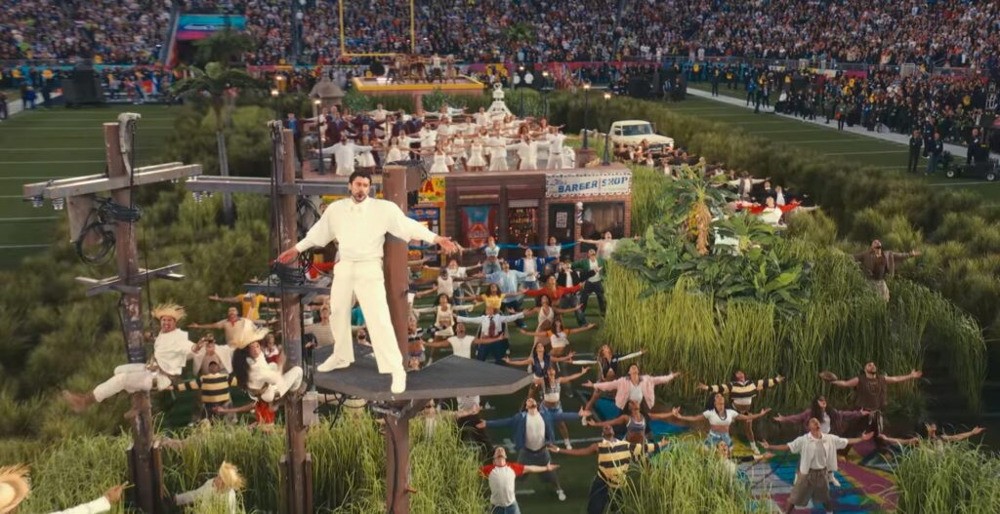
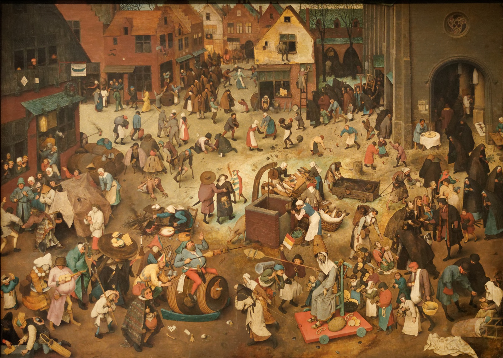
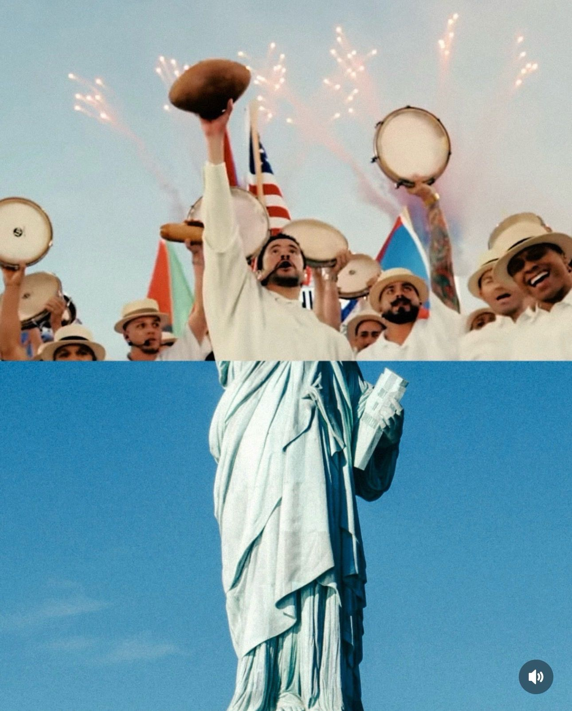

Essay · Music & Culture
Plena as Prophecy
Omega Sound·February 2026
There I was, Guïro in my left hand, Púa in my right, about to play and march to a rhythm of love, community and resistance. Plena. A folkloric music from Puerto Rico, born from protest, known as el periódico cantado ("the sung newspaper"), it became a vehicle for self-expression and stories about each other and the earth, reminding us why life is worth living.
What is Plena?
Plena's musicality consists of three Panderos/Panderetas (i.e. frame drums), a Guïro/Guïcharo and the voice: The Seguidor unites with a steady "Poum Poum Poum Poum" rhythm. The Puntero adds a counter melody "(rest) ToumToum." The Guïro/Guïcharo drives "Chakalaka Chakalaka." One sings a story. The chorus responds. The Requinto interjects within that conversation. The Guïro/Guïcharo is an instrument crafted by the Taíno, the indigenous people of Puerto Rico. The Seguidor, Puntero and Requinto originate from Spain but the way they are played descends from Puerto Rico's African ancestry. Plena's musical roots reach back to the late 19th century, but it crystallized in the early 1900s in the Barrio San Antón in the city of Ponce, a working-class neighborhood where formerly enslaved peoples and artisans transformed the aforementioned instruments into el periódico cantado. But it wasn't until shortly after the United States invaded Puerto Rico in 1898, that Plena's purpose was forged into a musical vehicle of protest and resistance. But how did I become a Plenero myself?

Becoming a Plenero
I was first introduced to Plena by my professor at the California Institute of the Arts, Emilia Moscoso Borja. Thereafter, she invited me to engineer sound for a group called Plenazo Tribe. A musical collective dedicated to celebrating, preserving and expanding Plena. That night something sparked in me. So I invited the group's leader Gabriel Jimenez Montes to my studio in North Hollywood. He let me borrow a CD by Plenero Leró Martínez Roldán named "Boricua Soy," fueling a fire inspiring me to study the rhythms and songs of Plena.

Since joining Plenazo Tribe January 2024, the rest has been history: we've released six singles (album out very soon!!), performed at Mofongos, El Floridita, Gold Diggers, Museum of Latin America Art, opened for Chuwi at the Constellation Room and the Roxy Theatre, opened for PJ Sin Suela at the Moroccan Lounge, and performed at Plaza de Los Pleneros, Plaza Pública de Comerío, La Calle San Sebastian, Pasito A Pasito, La Tarima Oficial de la Perla and last but not least, Superbowl LX.


Being Franco-American as a Declaration
I was always taught to love the world. But it wasn't until learning about musical soul and memory that I could feel that love transmitted through the music. By musical soul and memory I mean the way music carries the lived experience of every body that has ever indulged in it, a powerful vibration passed hand to hand across generations. My Alsatian father taught me to discern the world the way he discerned his wines: slowly, by terroir, by what the earth had given the grape. My Californian mother's source of escape and integrity was creativity: why she nurtured me like a painting that learned to apply its own colors to its existence.
But it is important to note that being Franco-American on that stage is not a biographical detail, to me, it is a declaration. We all know that the United States and the French Republic share, beyond their proclaimed ideals of universality, a vast treacherous imperial tradition. Both built by the hands and on the backs of the people they colonized and both continuing those contradictions enforcing policy that crush the marginalized on one side; on the other, a republic that recites equality. It is in these fractures that creativity lives for its deepest purpose. Which makes me think of my aunt, Marylene Schultz, who left Algolsheim (village in Alsace) in 1967 to run an orphanage in Bethany whose purpose became bound to nurturing the lives of Palestinian orphans, weaving bridges where crossing seems impossible. She arrived six weeks before the Six-Day War, joined the Women in Black to peacefully protest the occupation and stayed for the rest of her life to raise and nurture generations of Muslim, Christian and Jewish children together.
Through my immersion within the world's creative pulses, I pursue, through the expression that I must carry that same purpose: weaving connection where power weaves exclusion. Because ultimately, I believe that music is capable of prophesying social transformation. This is not just a feeling I carry on stage. The French economist and theorist Jacques Attali stated exactly this in his 1977 book Noise: The Political Economy of Music: that music does not merely reflect the world that exists, it announces the world that is coming. "Music," Attali writes, "is prophecy. Its styles and economic organization are ahead of the rest of society." That is why every empire has tried to control it, and why no empire ever fully has. On the evening of Superbowl LX, when Plena submerged the stadium, it was a prophecy made audible. But what prophecy?
Bad Bunny's Super Bowl LX as a Bruegel Painting
Well to me Bad Bunny's Super Bowl LX performance had a painting as a horizon. Throughout the performance, I felt myself inheriting Bruegel the Elder's 1559 oil-on-panel painting "The Fight between Carnival and Lent:" on one side, the subversive joy shared by the performers embodied Carnaval; on the other, the bleachers, solemn and silent, the temple of American consumption, commercialism and the spectacle of the dollar, played Lent.


Which is precisely where the power of Bad Bunny's gesture resides: reclaiming the very language that the Spanish colonial empire imposed on Puerto Rico to make it an instrument of its own creativity and community. Expression meant to be silenced grasping the megaphone from those engendered to silence it. Further, by featuring Perreo dance, Salsa and of course Plena within his performance and declaring with his own words that Latin America is America, he is effectively fracturing the temple of consumerism from inside to inspire the world to re-conquer the meaning of creativity, culture and community. Hence reminding us that whatever you relate to whether it is the essence of Reggaeton, Plena and Salsa or Anglo Celtic ballads or Balkan fold tunes or Brazilian Capoeira (whatever it might be) consume it by living it and live it with love. Because that is creativity's true value and power lies. Which is what the musicians and performers in Bruegel's painting are stating and what we, the performers alongside Bad Bunny, are telling you. So please, don't just stare into what you were born to be a part of. Rather, utilize artist performances, content, music videos as the fuse to the expression of your creativity.
